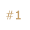
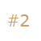
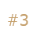
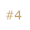
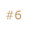
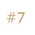
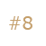
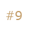

ご相談から解決までの流れ
ご相談から解決までの流れ
 動画で学ぼう！
動画で学ぼう！
ご相談から解決までの流れ
メール・お電話・LINEでお問合せ後、面談で正式にご相談スタート！
まずは、電話・メール・LINEとお好きな方法でご相談ください。もちろん土日祝日も対応可能です。元・金融機関のスタッフが対応いたしますので、今のご状況から、住宅ローン滞納や任意売却について、分からないことまで何でもお答え致します。お問合せ後、正式に面談の日程調整等を行います。面談方法はご自宅へのご訪問や弊社オフィス・地域優良協力店等へのご来訪、オンライン面談（zoom利用）等、お好きな方法をお選びいただけます。※面談は事前にご予約が必要です。
不動産査定と登記調査
金融機関と同じ査定方法（システム）を用いて、まずは机上査定で適正な不動産価値を調べます。同時に、最新の不動産登記内容を調べ、登記名義人や抵当権設定者、差押えの内容などを明らかにいたします。
解決方法のご案内
任意売却Dr.のスタッフが分析した結果を踏まえ、ご相談者様の理想に沿った解決方法と、全ての解決までにかかる期間をご案内いたします。また、一般売却や任意売却など不動産売却が必要なケースでは、お近くの「地域優良協力店」を数社ご提案し、お選び頂きます。 「地域優良協力店」とは地域に精通した安心の店舗型不動産会社（※当社独自の90項目を超える厳しい審査基準をクリアした提携先のみ）です。
現地調査
任意売却Dr.スタッフと地域優良協力店の担当者で、ご相談者様のご自宅に訪問し、詳細な査定書を作成する為の現地調査を実施いたします。また、この時に解決までのスケジューリングや、金融機関側との話し合いについて、細かく打合せを実施します
金融機関と協議
任意売却Dr.スタッフと地域優良協力店の担当者で、金融機関や各利害関係者に対して、解決に向けた今後の見 通しを説明し、売却（任意売却を含む）の意思を伝え、承諾を頂きます。
販売活動
「地域優良協力店」は、強力な販売網と圧倒的な販売センスを駆使し、売却活動を行います。任意売却Dr.カルテというシステムによって進捗状況をリアルタイムに管理しているので見える化も実現しています。 また、ご自身の職場や友人、お子様の学校など近しい方々にも売却に至った理由が知られることは一切ありませんので、ご安心ください。
転居のご準備
お部屋のお片付け、ご希望エリア内での賃貸探し、格安の引越し業者手配、各種申請や手続きなど、ご相談者様の希望に合わせてお手伝いをさせて頂きます。もちろん、転居時期についてもご希望に沿った時期にて可能です。
売却成立！
販売活動の開始から、最短では1か月、一般的には3～5か月程度で購入希望者が見つかります。金融機関から最終的な承諾を得て、購入希望者と売買契約を締結し、具体的なお引越し等の日程調整を行い、お引渡しへと進みます。
売却後の残債務がある場合には、金融機関との間で返済方法について協議が必要ですが、任意売却Dr.では金融機関の元・審査員が、事前に申請書類や協議内容について万全にサポートをいたします。
新しい生活のスタート！
全てが無事に解決し、新生活が始まります。月々の負担やお気持ちはずいぶんと軽くなることと思います。もちろん、売却完了以降も新生活が安定して安心できるまで、私たちはご相談者様に寄り添ってサポートを続けます。
もしも、離婚や債務整理など法的措置が必要な場合には、適切な時期に全国500名以上の各地域で活躍する弁護士・司法書士の先生方をご紹介いたします。